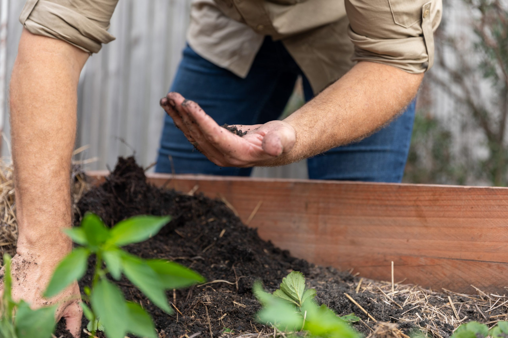
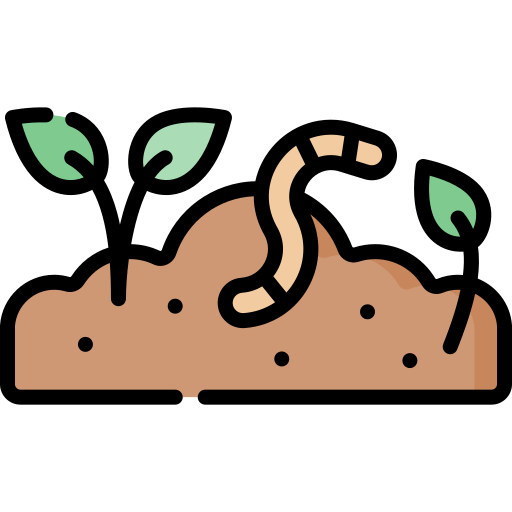
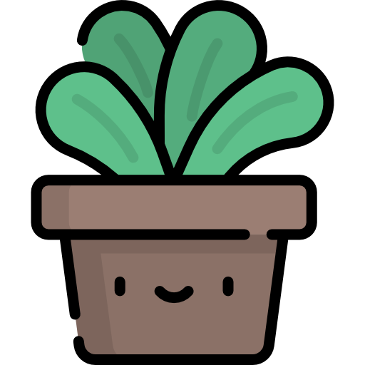

Atlas Soils
Home
Community
Research
Listen
Our Products
Million Coffees Challenge
Connect with Us
☰
Atlas Soils
THE MOBILE CIRCULAR ECONOMY
____

Premium Soil Products
Brimming with biology and ready for use
See our Products
The Problem
Waste is Waste.
Or
is it?

How can I improve the fertility of my garden soil?

What products are best for restoring degraded land?
How can I enhance soil health naturally?
What’s the best way to compost at home?
Why use recycled soil products?
How can I manage waste sustainably?
What are the signs of healthy soil?
How can I reduce my carbon footprint?
How do you create soils from waste?
What is the circular economy?